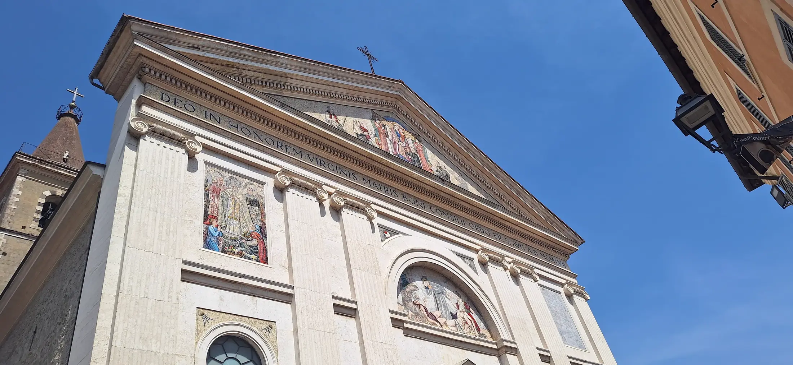
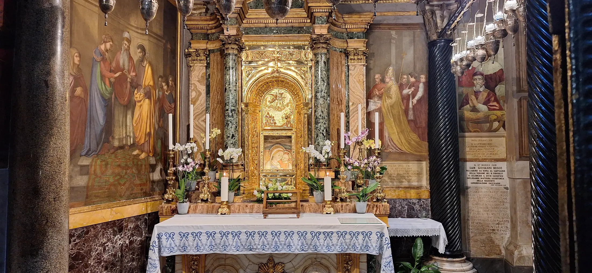
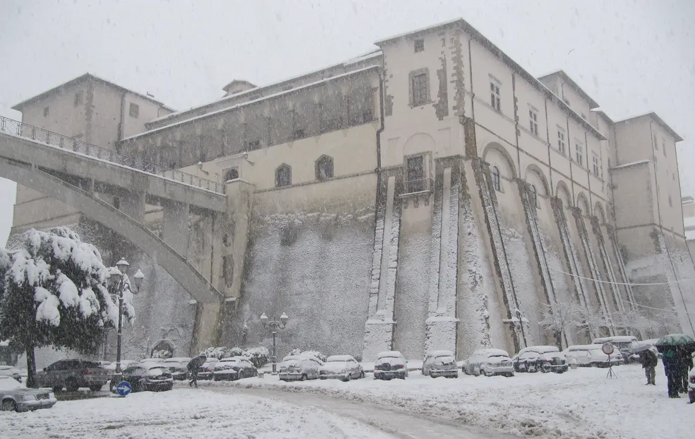

Ordinazione diGian Maria
Candelora
Sabato 12 dicembre 2026, ore 11:00
Santuario Santa Maria Madre del Buon Consiglio, Genazzano (Roma)


Amici carissimi, qui trovate tutte le informazioni per partecipare alla giornata nel miglior modo possibile.
Il programma
Sabato 12 dicembre 2026
- 11:00
- Celebrazione dell'ordinazione nel santuario
- 13:00 circa
- Fine della celebrazione
- A seguire
- Momento di convivialità all'Aminta Resort, a circa dieci minuti di macchina dal santuario
Domenica 13 dicembre 2026
- 11:15
- Fra Gian Maria celebra la sua prima messa in santuario
Dove
Genazzano
Attenzione: Genazzano, e non Genzano. Sono due paesi diversi.
Parcheggi
Genazzano è un piccolo borgo e i parcheggi sono pochi. Ecco i luoghi dove è più facile trovarne. Probabilmente bisognerà camminare un po' e fare qualche salita.

Parcheggio Madre Teresa di Calcutta
Nella grande curva che precede l'ingresso del paese, a circa 200 metri. Può contenere circa 50 auto, considerando la doppia fila.
Apri su MapsPiazzale della Pace
Il punto di snodo principale del borgo. Lo riconoscerete dal Castello Colonna e dal grande ponte che sovrasta il piazzale.
Apri su MapsViale San Vito Romano
Se a Piazzale della Pace non c'è posto, proseguite dritto e parcheggiate a lato della carreggiata.
Apri su MapsVia Famiglia Morelli Giacomo, 7
Apri su MapsVia Scipione Vannutelli, Via Antonio Gramsci, Via Giuseppe Garibaldi
Vie vicine al centro: sosta possibile lungo queste strade secondarie.
Apri su Maps
Abbiamo parlato con i Vigili Urbani: visto il numero di partecipanti, abbiamo chiesto di aiutarci a dirigere il traffico e soprattutto di essere clementi.
Rinfresco
La celebrazione inizia alle 11:00 e si conclude verso le 13:00. A seguire ci sarà un momento di convivialità al ristorante Aminta Resort, a circa dieci minuti di macchina dal santuario.
Aminta Resort, Via Trovano, 5, GenazzanoDove dormire
Per chi ha bisogno di passare la notte fuori, questi sono i luoghi più comodi.
-
Hotel Cremona
Via Palmiro Togliatti, 19, Genazzano (RM)
-
Aminta Resort
Via Trovano, 5, Genazzano (RM)
Il ristorante del rinfresco ha un numero limitato di camere.
-
Dimora Genista
Via Valmontone, 25, Genazzano (RM)
-
Casale Tasciotto
Via Valmontone, 36, Genazzano (RM)
-
B&B Valmontone MagicLand, Casa del Girasole
Via Luigi Petroselli, 50/int. 2, Genazzano (RM)
Nel centro storico di Genazzano.
-
B&B La Taverna
Nel centro storico di Genazzano.
-
Alloggio turistico Brancaleone
Nel centro storico di Genazzano.
Per i sacerdoti
I concelebranti celebreranno soltanto con la stola.
Portate voi
- Il camice
- Il cingolo
Pensa il santuario
- La stola
Conferma la presenza
Entro il 2 dicembreAmici carissimi,
per una più precisa organizzazione, vi chiedo di confermare la vostra presenza entro il 2 dicembre, usando questo modulo oppure contattandomi personalmente.
Vi chiedo di indicare il numero dei partecipanti ed eventuali tolleranze o esigenze alimentari.
Vi ringrazio infinitamente per la vostra collaborazione e comprensione e chiedo a tutti di accompagnarmi con la preghiera in vista di questo grande evento.
A presto!
Padre Gian Maria
Grazie! La vostra conferma è arrivata.